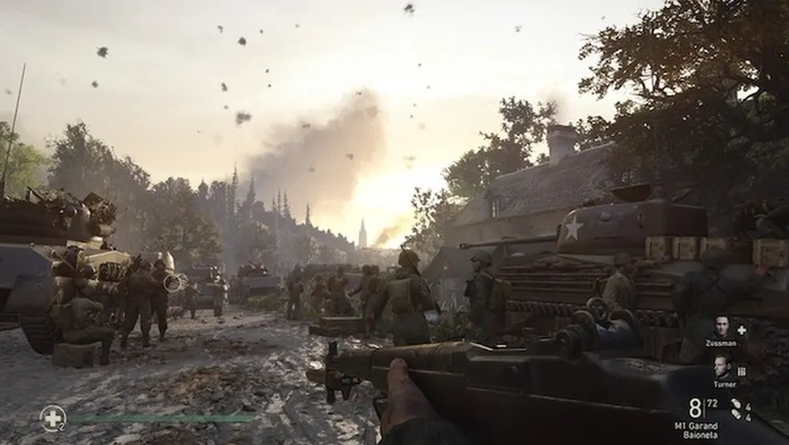
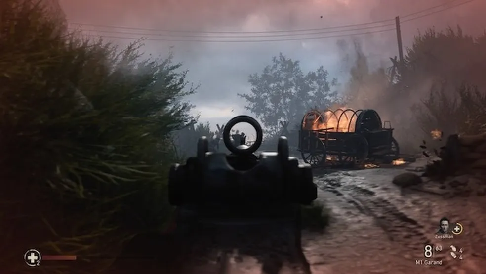
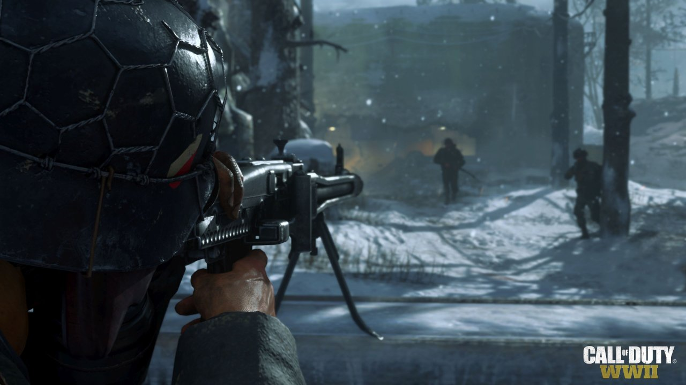
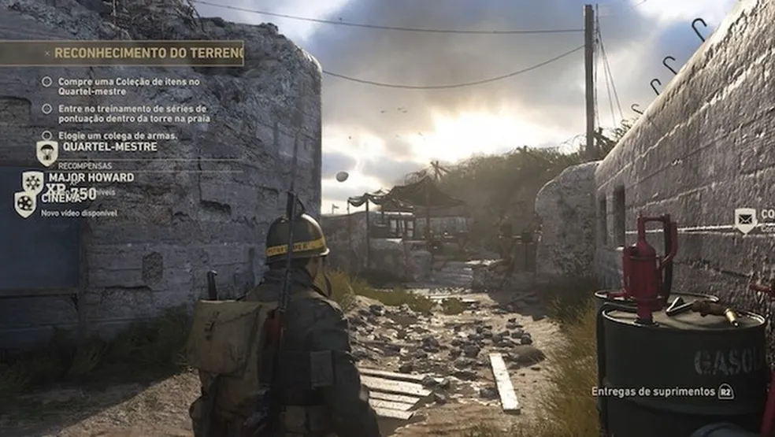
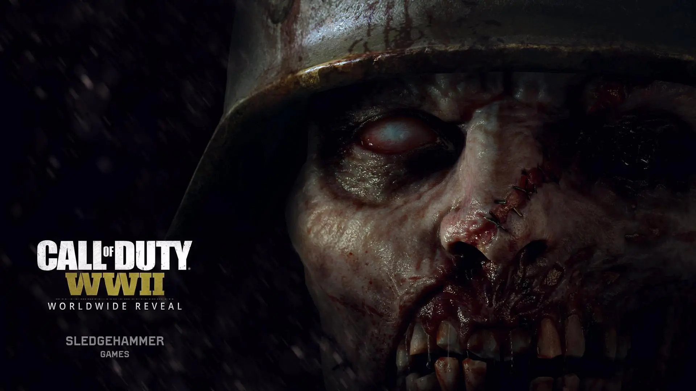
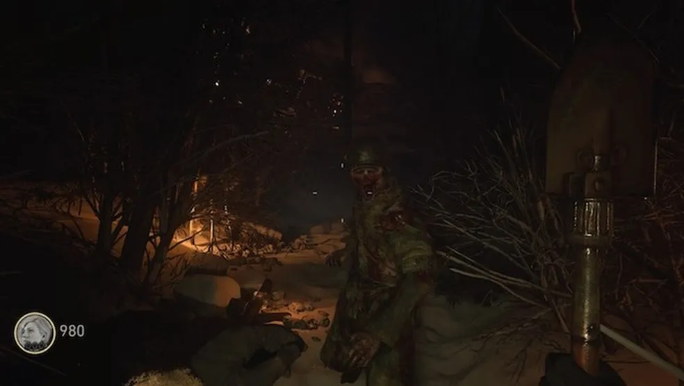
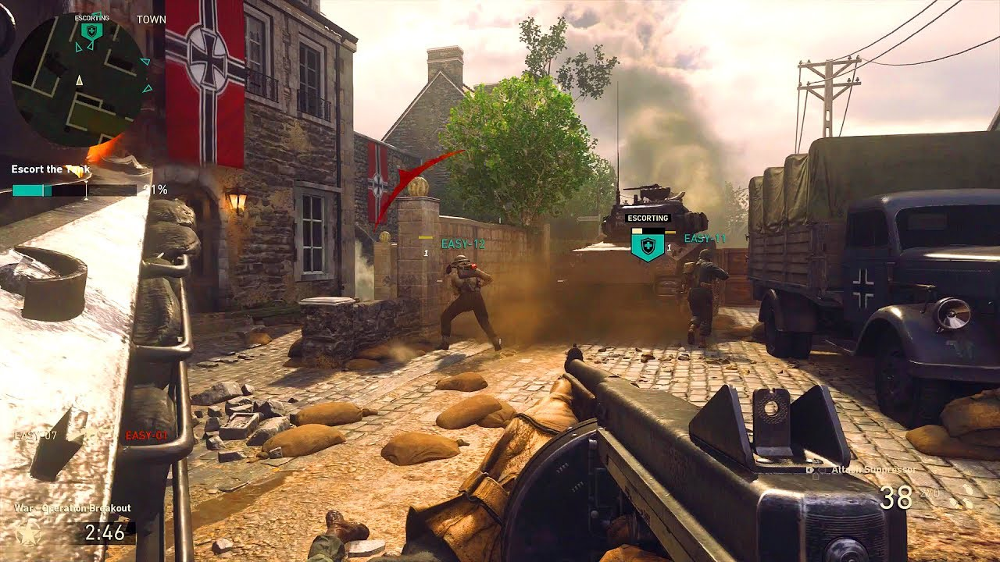
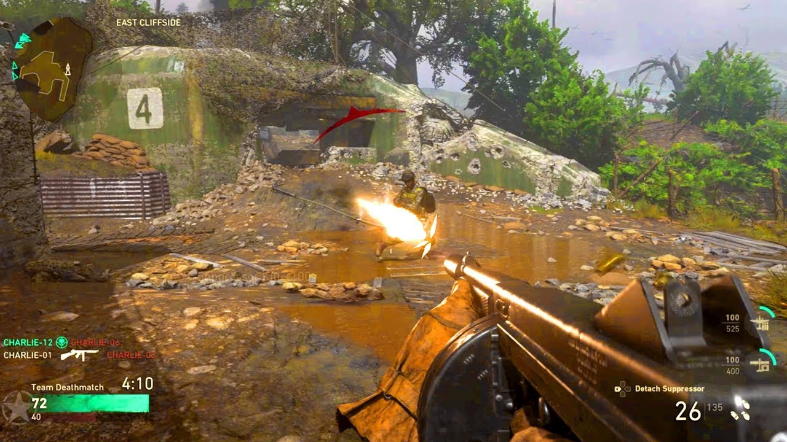
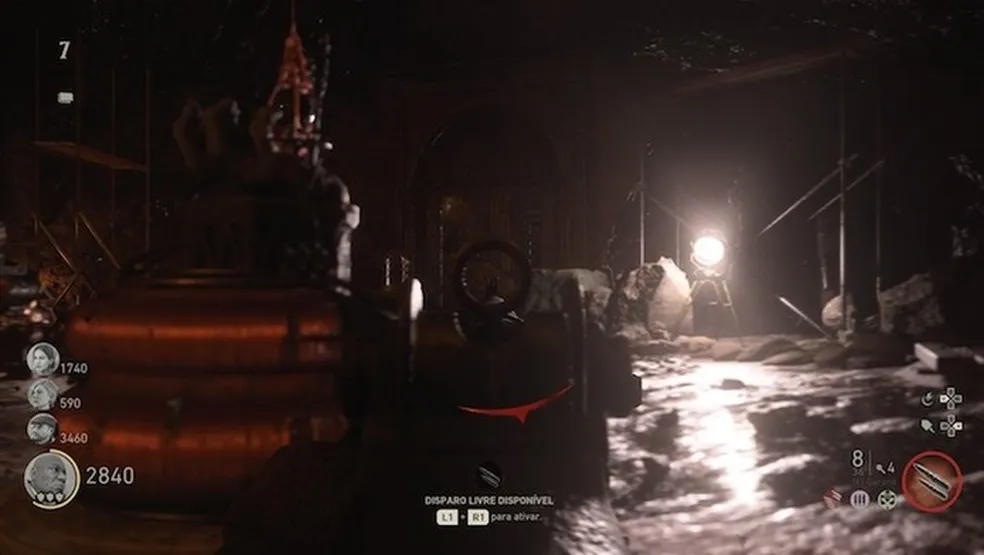

Review Call of Duty: World War 2
Um dos games mais aguardados do ano, Call of Duty WW2 marca o retorno às origens da franquia na
Segunda Guerra Mundial.
Sobre o Game

Call of Duty: WWII é o novo jogo da famosa franquia de tiro em primeira pessoa da Activision.
Desenvolvido pelo estúdio Sledgehammer e com versões para PS4, Xbox One e PC, o título retorna às
origens e leva os jogadores de volta à Segunda Guerra Mundial.
Voltando às Origens

Depois de longos anos seguindo a tão questionada temática futurista, Call of Duty finalmente volta às
suas raízes históricas. World War II traz uma campanha consistente, um modo multiplayer mais cadenciado
e expandido em personalização e, é claro, a clássica modalidade zumbi com mortos-vivos na Segunda
Guerra.
Modo Campanha

Sem grandes novidades, a campanha do novo Call of Duty segue a mesma estrutura dos jogos anteriores. A
história é dividida em capítulos e começa com o soldado norte-americano Ronald "Red" Daniels na batalha
da Normandia, no Dia D. O objetivo do protagonista e sua equipe é justamente reverter a propagação alemã
que assolou a Europa.
A dinâmica da campanha mantém a tradicional estrutura linear: elimine todos os inimigos da tela para
avançar. A participação especial da vez é a presença do ator Josh Duhamel (que interpreta o Major
William Lennox nos filmes Transformers) no papel do sargento William Pierson
Apesar de contar com os clichês típicos, há níveis cinematográficos incríveis que conseguem imergir o
jogador no clima sangrento da Segunda Guerra. O enredo também procura explorar de forma inteligente a
relação de amizade entre soldados no campo de batalha, o que torna tudo mais interessante e emotivo.
Outro ponto do modo campanha que merece ser ressaltado é a dublagem em português brasileiro. O trabalho
de voz está caprichadíssimo e é, sem dúvidas, um dos melhores já vistos em jogos localizados ao nosso
idioma.
Sobre a jogabilidade

World War II preserva a jogabilidade que caracteriza Call of Duty, mas aposta em um ritmo cadenciado e
realista, algo mais "pé no chão". O personagem não tem tanta velocidade para percorrer os cenários e
ainda precisa poupar fôlego na corrida para não ficar em desvantagem diante dos inimigos. Além disso, é
preciso consumir kits de sobrevivência durante os confrontos para recuperar o medidor de vida.
Ao mesmo tempo em que as mecânicas estão acessíveis a novos jogadores, fãs de longa data devem se sentir
em casa - mesmo com as pequenas mudanças. Felizmente, Call of Duty continua com um gameplay sólido,
amigável e com foco total em diversão.
Modo Zumbi

Como de praxe, o modo zumbi é voltado à experiência cooperativa de até quatro jogadores, embora seja
possível jogar sozinho - o que deixa a modalidade, naturalmente, mais difícil. O game conduz o jogador à
cidade de Mittelburg, onde há experimentos obscuros envolvendo o exército nazista.

Logo de cara dá para perceber que o modo não é tão complexo como nos jogos anteriores. É claro que
há diversos segredos a serem descobertos pelo mapa, mas a proposta já começa muito bem explicada em um
prólogo.
Aqui, o objetivo é acumular trancos - a moeda utilizada para desbloquear armas - para progredir a novas
áreas. No decorrer da aventura, é possível obter equipamentos e habilidades especiais para dizimar
hordas de zumbis. O mapa, por sua vez, é grande, aberto e oferece muitas possibilidades de ação à
equipe.
Apesar de entregar somente um mapa jogável - posteriormente novos conteúdos serão adicionados por meio
de DLCs -, a modalidade é uma grande adição ao pacote de World War II, sendo extremamente divertido ao
lado de amigos.
Modo Multiplayer

O modo multiplayer é exatamente aquilo que todos nós esperávamos: mapas projetados ao cenário
competitivo e sistema de progressão viciante - e ainda uma área social no melhor estilo Destiny para
renovar a estrutura online. Em outras palavras, esta é a modalidade que certamente vai consumir a sua
vida pelos próximos meses.

Há nove modos disponíveis entre os clássicos Mata-Mata em Equipe, Baixa Confirmada, Dominação e
Localizar e Destruir e Destruir. A novidade é o "Guerra", no qual o objetivo é cumprir determinadas
tarefas em equipe dentro de uma estrutura narrativa. O mais interessante é que não há limite de
tempo e pontuação, ou seja, o time vencedor é aquele que consegue cumprir a missão primeiro.
Outro atrativo é a área social que funciona como uma sala de espera. Antes de entrar em uma partida, o
jogador pode realizar atividades básicas no lobby, como comprar caixas de itens, personalizar o visual
do soldado, o cartão de visitas, modificar perks e armas, entre outros.
Como era de se esperar, o arsenal de armamento está amplamente variado. Entre as novidades, agora é
permitido usar um lança-chamas para fritar vários inimigos de uma só vez, o mesmo equipamento usado por
fuzileiros norte-americanos durante a Segunda Guerra.
Gráficos

O visual de Call of Duty: World War II se assemelha bastante ao de Infinite Warfare e Advanced Warfare.
Os avanços gráficos e técnicos são mínimos, porém o alto nível estético continua inquestionável -
afinal, trata-se de um AAA com elevado valor de produção -, com cenários de extremo bom gosto e efeitos
caprichados de iluminação.
Avaliação final
World War II consegue proporcionar uma experiência espetacular em todos os seus três modos ao aliar a
boa e velha temática de Segunda Guerra com o clássico combate de Call of Duty. O título marca o retorno
às origens e recoloca a franquia no caminho certo, ainda que sem grandes inovações.